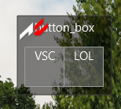
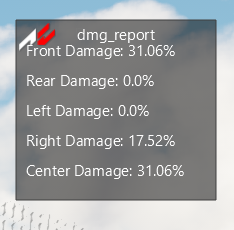
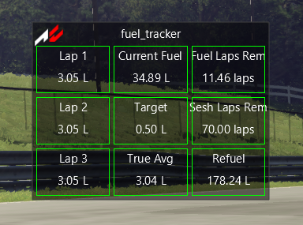
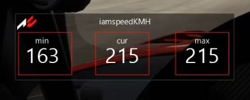
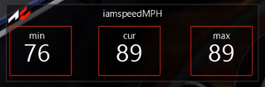
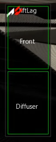
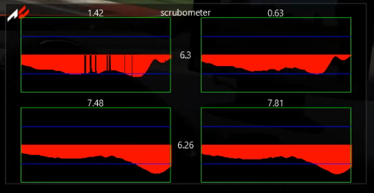
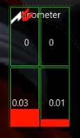
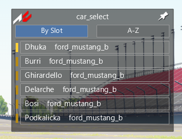

Button Box
Super simple chat button box that reads your config file and dynamically generates buttons. These buttons will type your configured text on press into Assetto Chat.

Damage Report
Details vehicle damage as a numerical value to better estimate repair times.

Fuel Tracker
Numerical fuel read out. Displays fuel usage for last 3 laps. Estimates laps remaining.

IAmSpeedKMH
Triple speedometer readouts that help track minimum, current, maximum speed to aid live corner analysis. Metric Units.

IAmSpeedMPH
Triple speedometer readouts that help track minimum, current, maximum speed to aid live corner analysis. Freedom Units.

LiftLag
A flashing alert gauge that flashes when your front wing or diffuser go either too low or too high and aren't performing optimally.

Scrub-O-Meter
This tire graph shows a time-series view of the slip-angle on each tire. This can show driver mistakes such as under or over driving the tires. It can also provide insight into vehicle balance.

Slip-O-Meter
Live display of tire slip ratio. This shows tire lockup under braking and wheelspin under acceleration. The display flashes when the value exceeds the ABS or TC trigger value.

Car Select
A list of cars registered to the server. Selecting a car changes camera focus to that car.